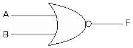
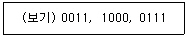
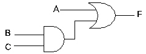
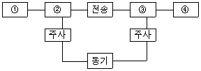
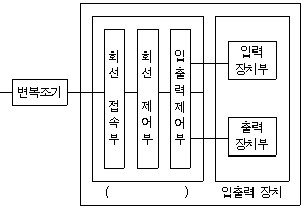

정보기기운용기능사 (2001-01-21 기출문제)
1과목: 전산 기초 이론
1. 1951년 미국의 인구 통계국에 설치된 세계최초의 상업용 전자 계산기는?
- UNIVAC - 1
- IBM 702
- BINAC
- NOR 102
(정답률: 89%)

2. 다음에 열거한 장치 중에서 순차처리(sequential access)만 가능한 것은?
- 자기 드럼
- 자기 테이프
- 자기 디스크
- 자기 코어
(정답률: 78%)
3. 처리하고자 하는 자료나 프로그램 등을 전자계산기 내부로 받아들이는 기능은?
- 입력기능
- 출력기능
- 제어기능
- 연산기능
(정답률: 80%)
4. 그림과 같은 논리회로는?

- AND gate
- OR gate
- NOT gate
- NOR gate
(정답률: 76%)
5. 사용자가 작성한 프로그램을 무엇이라고 하는가?
- 원시 프로그램
- 목록 프로그램
- 컴파일러
- 연계·편집 프로그램
(정답률: 76%)
6. 주기억 장치에는 프로그램(Program)과 또 무엇이 기억되는가?
- bit
- data
- File
- record
(정답률: 74%)
7. 다음 보기의 8421 BCD 부호수를 해독한 것 중 맞는 것은?

- 783
- 784
- 387
- 487
(정답률: 79%)
8. 그림과 같은 게이트 회로의 논리식은?

- A+BC
- A+B+C
- AB+C
- ABC
(정답률: 84%)
9. 다음 프로그램 중 디버그(debug) 수행이 어려운 언어는?
- 베이직
- 기계어
- 코볼
- 포오트란
(정답률: 74%)
10. 다음 중 제어 프로그램에 속하지 않는 것은?
- job 프로그램
- supervisor 프로그램
- 언어 번역 프로그램
- data 관리 프로그램
(정답률: 78%)
2과목: 정보 기기 운용
11. 다음 중에서 MODEM의 뜻은?
- 변복조 단말장치
- 변조와 복조장치
- 인쇄와 전송장치
- 복조와 단말장치
(정답률: 72%)
12. 다음 중 연관성 있는 것끼리 짝지어진 것으로 적당하지 않은 것은?
- OCR-지도, 도표
- OMR-대입고사채점
- 키보드-TERMINAL
- MICR-은행수표
(정답률: 68%)
13. 사무자동화의 정의와 거리가 먼 것은?
- 사무의 합리화
- 사무작업의 기계화
- 정보의 시스템화
- 기업운영의 다변화
(정답률: 62%)
14. 자기테이프에 논리레코드 단위로 데이터를 기록시킬 때 레코드와 레코드 사이에 생기는 여백(Gap)을 무엇이라고 하는가?
- IBG
- Sector
- Track
- IRG
(정답률: 68%)
15. 컴퓨터 바이러스를 치료하는 백신프로그램의 기능이 아닌 것은?
- 진단
- 예방
- 살균
- 치료
(정답률: 88%)
16. 쌍방향 CATV의 응용분야와 거리가 먼 것은?
- 자동검침
- 문서의 전송
- 홈뱅킹
- 방송응답퀴즈
(정답률: 70%)
17. 기능키(function key)에 대한 설명 중 올바르게 설명하지 않은 것은?
- 키보드에서 입력키로 사용된다.
- 워드프로세서에서 다양한 기능들이 지정되어 있는 키
- 106키 키보드에서는 위쪽에 위치되어 있다.
- ESC키를 제외한 방향키와 F1∼F10까지의 키
(정답률: 66%)
18. 전송로에 디지털 신호를 전송하기 위한 신호변환 장치는?
- MODEM
- DTE
- FEP
- DSU
(정답률: 60%)
19. 다음 표는 팩시밀리(Facsimile)의 화상통신 계통도이다. 각 번호에 들어갈 내용을 번호순으로 올바르게 나열한 것은?

- 송신원화, 광전변환, 전광변화, 수신원화
- 수신원화, 광전변환, 전광변환, 송신원화
- 광전변환, 수신원화, 전광변환, 송신원화
- 전광변환, 송신원화, 광전변화, 수신원화
(정답률: 83%)
20. 금요일이 되는 13일에만 작동하는 바이러스(Virus)는?
- 미켈란젤로 바이러스
- 예루살렘 바이러스
- 브레인 바이러스
- 1571 바이러스
(정답률: 78%)
21. 다음 중 타이프 라이터나 프린터로 인쇄된 문자를 광학적으로 판독하는 입력장치는?
- MICR
- OMR
- OCR
- Card reader
(정답률: 61%)
22. 100[V] 500[W]의 전열기가 있다. 이 전열기의 저항은?
- 15[Ω]
- 10[Ω]
- 5[Ω]
- 20[Ω]
(정답률: 52%)
23. 다음 중 정보량과 관계 없는 것은?
- 정보의 복잡성
- 정밀성
- 정보의 가치
- 예측 가능성
(정답률: 62%)
24. 다음 중 기전력 V=2.0[V], 내부저항 r=0.5[Ω]인 전지를 6개 직렬로 접속하여 부하 R=9[Ω]에 연결할 때 부하에 걸리는 전압[V]은?
- 11
- 10
- 9
- 8
(정답률: 61%)
25. 노트북에서 사용되는 액정 디스플레이의 단점이 아닌 것은?
- 바라보는 위치에 따라 선명도가 다르다.
- 표시속도가 CRT 디스플레이에 비해 느리다.
- 화면의 떨림이 심하고, 전자파 방출이 심하다.
- 비발광체이기 때문에 주위가 어두우면 화면을 읽기 어렵다.
(정답률: 67%)
26. 다음 그림은 단말기의 구성도를 나타낸 것이다. 회선 접속부, 회선 제어부, 입출력 제어부를 블록(Block)화하여 무엇이라 하는가?

- 파일 관리 장치
- 네트워크 제어장치
- 전송제어 장치
- 다중처리장치
(정답률: 71%)
27. 모뎀에서 채택하고 있는 변조방식 중 가장 빠른 속도의 변조방식은?
- 위상변조
- 시분할변조
- 코드분할변조
- 주파수변조
(정답률: 49%)
28. 2[C]의 전기량이 2점 사이를 이동하여 8[J]의 일을 했을 때 2점 사이의 전위차는 몇 [V]인가?
- 16
- 4
- 6
- 10
(정답률: 60%)
29. 2종의 금속 또는 반도체를 폐로가 되도록 접속하고 접속한 두 점 사이에 온도차를 주면 기전력이 발생하여 전류가 흐른다. 이와 같은 현상을 무엇이라고 하는가?
- 홀 효과
- 톰슨 효과
- 펠티에 효과
- 지벡 효과
(정답률: 54%)
30. 위성 통신의 장점으로 볼 수 없는 것은?
- 다원 접속이 가능
- 광대역의 통신 회선구성
- 전송 지연이 없다.
- 높은 신뢰성의 통신 확보
(정답률: 69%)
3과목: 정보 통신 일반
31. 다수의 이용자가 많은 입출력장치를 거의 동시에 사용하여 중앙의 다른 컴퓨터를 공동으로 이용할 수 있게 설계한 방식은?
- 공간분할시스템(Space-Sharing System)
- 시분할시스템(Time-Sharing System)
- 디지털다중시스템(Digital-Multi System)
- 일괄처리시스템(Batch-Processing System)
(정답률: 57%)
32. 데이터통신의 정의에 대한 설명에 적합하지 않은 것은?
- 정보기기 사이에 디지털 2진 형태로 표현된 정보를 송수신 하는 통신
- 통신신호가 아날로그(Analog) 형태인 음성전용 통신
- 전기통신회선에 전자계산기 본체와 그에 부수되는 입출력 장치를 이용하는 통신
- 데이터전송과 데이터처리를 유기적으로 결합하도록 시스템을 구성하여 정보 전달의 목적을 달성하기 위한 통신
(정답률: 66%)
33. 중앙의 데이터 베이스(Data base)에 대량의 정보를 저장해 두고 터미널에서 이중 필요한 사항을 질의하면 즉시 응답해 주는 응용형태는?
- 시차배분
- 수집과 입력
- 거래처리
- 질의 응답
(정답률: 72%)
34. 비동기(Asynchronous) 데이터 전송을 설명한 것은?
- 한 문자 전송 때마다 시작과 끝 비트(bit)를 갖고 전송되는 것이다.
- 송·수신 클럭(clock)에 따라 데이터를 전송하는 것이다.
- 한 데이터 블록(Block)단위로 데이터를 전송하는 것이다.
- 순수한 메시지(Message)만을 전송하는 것이다.
(정답률: 54%)
35. 데이터를 전송할 때 양방향으로는 가능하나 동시에 양방향으로는 불가능한 방식은?
- 전이중방식(Full-duplex)
- 단향성방식(Simplex)
- 반이중방식(Half-duplex)
- 반향성방식(Echoplex)
(정답률: 76%)
36. PCM 신호를 주파수 변조하여 사용하는 방식을 뜻하는 통신 방식은?
- FSK
- DPSK
- ASK
- PSK
(정답률: 58%)
37. 역 다중화기(Inverse Multiplexer)의 특징이 아닌 것은?
- 광대역에서 통신속도를 변환하여 이용하는 기기이다.
- 기능적으로 시분할 다중화기와 유사하다.
- 바이프렉서(Biplexer)라고도 부른다.
- 통신회선 고장시 회선경로 변경에 융통성을 부여할 수 없다.
(정답률: 63%)
38. 전송속도가 2400[bps]인 회선을 사용하여 24000 문자(8[bit]/문자, 비동기식)를 전송하는데 걸리는 시간은? (단, 스타트 비트와 스톱 비트는 각 1[bit]이다.)
- 100초
- 1000초
- 50초
- 10초
(정답률: 61%)
39. 통신선로의 효율을 극대화시켜 회선비를 줄이는 장비는?
- 단말기
- 변복조기
- 음향 결합기
- 시분할 다중화 장비
(정답률: 57%)
40. TV 화면과 화면 사이의 수직 귀선시간을 이용하여 정보를 일방향으로만 전송하는 뉴미디어는?
- Videotex
- CATV
- HDTV
- Teletext
(정답률: 51%)
41. 통신 소프트웨어의 기능과 관계가 적은 것은?
- 통신하드웨어의 제어
- 데이터의 송·수신
- 이용자 인터페이스의 제어
- 데이터의 수집 시스템
(정답률: 43%)
42. 동기식 전송방식에 사용되는 SDLC, HDLC에서 데이터 전송시 쓰이는 에러검출방식은?
- CRC 방식
- 정(+)마크부호 방식
- ARQ 방식
- 수직, 수평패리티 방식
(정답률: 46%)
43. 컴퓨터가 폴링(Polling)하는 시스템에서만 사용할 수 있는 것은?
- 멀티드롭(multidrop)
- 다중화장치(MUX)
- 트랜스폰더(transponder)
- 2지점간(point-to-point)
(정답률: 52%)
44. 데이터통신에 있어서 변조와 복조를 수행하는 장비는?
- 허브(HUB)
- 개인컴퓨터(PC)
- 모뎀(MODEM)
- 케이블(CABLE)
(정답률: 84%)
45. 텍스트, 사진, 그래픽, 비디오, 오디오, 음성 정보에 이르기까지 각종 데이터들을 손쉽게 쓸 수 있도록 하여주는 하이퍼미디어 정보검색도구는?
- WWW
- FTP
- HDLC
- TELNET
(정답률: 70%)
46. 통신망 중 방송망으로 이용되지 않는 것은?
- 패킷 라디오망
- 근거리 통신망
- 인공 위성망
- 메시지 통신망
(정답률: 65%)
47. 항공회사의 좌석예약 등에 활용되는 처리방식으로 자료(data)가 발생하는 즉시 처리하는 방식은?
- 랜덤처리(Random processing)방식
- 순차처리(Sequential processing)방식
- 배치처리(Batch processing)방식
- 리얼-타임처리(Real-time processing)방식
(정답률: 76%)
48. 데이터통신의 부호 전송방식중 0과 1의 신호를 직류의 +, 0, -의 전위에 대응시켜 전송하는 방식은?
- ASK(Amplitude shift keying) 방식
- 기초대역(Base-band) 방식
- 정(+)마아크(mark)부호 방식
- FSK(Frequency shift keying) 방식
(정답률: 42%)
49. EIA의 RS-232C 접속 케이블의 25핀 콘넥터에서 송신 데이터 신호의 핀 번호는?
- 3
- 4
- 1
- 2
(정답률: 70%)
50. 정보전송시 실제 전송할 텍스트(데이터군)의 시작임을 의미하는 전송제어문자는?
- ETX
- STX
- SOH
- ACK
(정답률: 61%)
4과목: 정보 통신 업무 규정
51. 정보통신부장관이 전기통신기본계획을 공고하여야 하는 목적으로서 가장 적합한 것은?
- 전기통신의 원활한 발전과 정보사회의 촉진 도모
- 전기통신역무의 다양화 및 신속한 서비스 향상
- 통신기술의 발전촉진 및 통신기기의 현대화 보급
- 전기통신사업의 질서유지와 합리적 경영
(정답률: 59%)
52. 기간통신사업자가 다른 전기통신사업자의 전기통신설비를 상호접속하여 필요한 설비 또는 시설 등을 공동사용하고자할 때 어떻게 하는 것이 적합한가?
- 서로 협정을 체결하고 공동사용하여야 한다.
- 정보통신부장관의 승인을 받아 그대로 접속한다.
- 통신위원회에 신고하고 공동사용하여야 한다.
- 시설 및 관리상 공동사용이 허용 안된다.
(정답률: 60%)
53. 정보통신망(전산망)에 관련된 기술 및 기기의 호환성과 연동성을 확보하기 위한 기술수준은 무엇으로 제정하여 시행하는가?
- 총리령
- 대통령령
- 총무처령
- 정보통신부령
(정답률: 60%)
54. 정보통신 속도의 단위는?
- 비트[bit]만 사용한다.
- 보오[baud]만 사용한다.
- 비트/초[bits/s]만 사용한다.
- 보오[baud] 또는 비트/초[bits/s]를 사용한다.
(정답률: 65%)
55. 전기통신설비는 무엇에 적합하도록 유지·보수하여야 하는가?
- 기간통신사업자가 정하는 유지·보수 규정
- 전기통신사업자의 이용약관에서 정하는 보전기준
- 대통령령이 정하는 전기통신사업법시행령
- 정보통신부가 정하는 전기통신설비의 기술기준
(정답률: 57%)
56. 다음 중 통신보안의 1차적인 책임자는?
- 통신 이용자
- 통신문 기안자
- 해당기관의 장
- 해당기관의 보안담당관
(정답률: 70%)
57. 별정통신사업을 경영하려면 어떤 절차를 받아야 하는가?
- 정보통신부장관에게 등록을 하여야 한다.
- 어떤 절차가 없이 임의대로 경영할 수 있다.
- 기간통신사업자의 승인을 받아야 한다.
- 정보통신부장관에게 신고만 하면 된다.
(정답률: 67%)
58. 전기통신사업자가 제공하는 통신역무에 대한 이용요금 및 이용조건을 정하여 공고한 것은?
- 통신요금규정
- 이용약관
- 통신사업구분
- 통신방식
(정답률: 77%)
59. 전기통신사업의 분류로 옳은 것은?
- 기간통신사업, 부가통신사업, 특정통신사업
- 기간통신사업, 부가통신사업, 별정통신사업
- 기간통신사업, 별정통신사업, 일반통신사업
- 기간통신사업, 부가통신사업, 일반통신사업
(정답률: 75%)
60. 절대레벨의 정의에 대한 사항으로 틀리는 것은?
- 송출전력은 1[mW]이다.
- 전압은 0.775[V]이다.
- 전원저항과 회선저항은 600[옴]이다.
- 전류는 0.29[mA]이다.
(정답률: 49%)